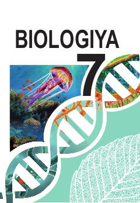

7B7-sinf o'quvchilari uchun mo'ljallangan biologiya fanidan darslik.
Mazkur darslik 7-sinf o'quvchilari uchun mo'ljallangan bo'lib, tirik organizmlarning xilma-xilligi, biosfera, biologiya fanining asoslari va uning hayotdagi ahamiyati haqida ma'lumot beradi. Kitobda bakteriyalar, protistlar, zamburug'lar, o'simliklar va hayvonlar haqidagi dastlabki ilmiy tushunchalar yoritilgan.